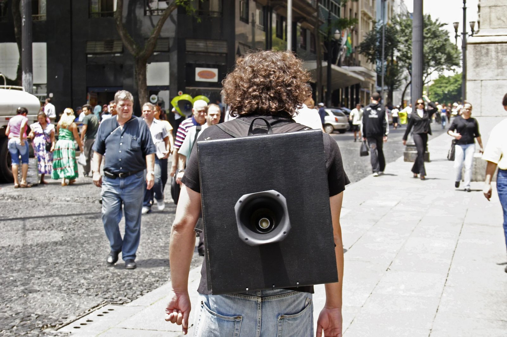
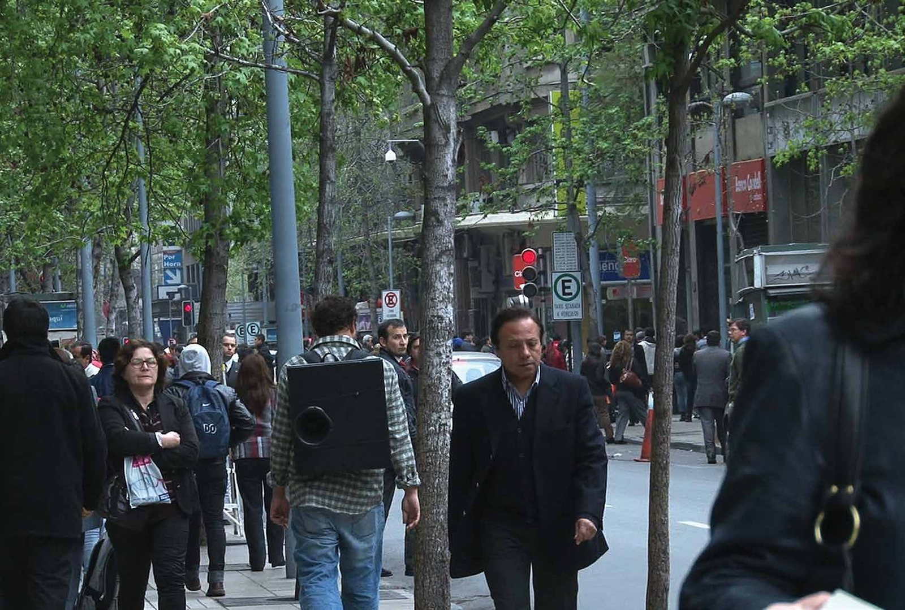

Falante
Honourable mention, 58th Salão de Abril, Fortaleza, 2007
Sound recording in preparation.
Performance with a backpack and loudspeaker playing the sound poem “Não preste atenção” [Do not pay attention]. Shown at the 58th Salão de Abril, Fortaleza (honourable mention), and in Futuro do Presente, Itaú Cultural, São Paulo, 2007. The video is in the collection of the Museo de Artes Visuales, Santiago, Chile.
- Award
- Honourable mention, 58th Salão de Abril, Fortaleza, 2007
- Materials
- Backpack with loudspeaker, sound poem “Não preste atenção” [Do not pay attention]
- Venue
- Fortaleza (58th Salão de Abril, honourable mention) and São Paulo (Futuro do Presente, Itaú Cultural), 2007
- Collection
- Museo de Artes Visuales, Santiago, Chile
- Group exhibition
- Media Art Festival Arad, 4th edition — CINEMA (2017)



Video
Rui Chaves, em Making It Heard (Bloomsbury, 2019), pp. 49–51 ↗